Versión 1.8 · Instalación, configuración y uso, paso a paso
FOrdre prepara, a partir de la lista de materiales de una máquina, las cajas y bandejas a medida para imprimir en 3D (una para cada paso de montaje, con un cajetín para cada pieza y sus etiquetas) y después guía el taller: quién llena las cajas, quién monta, quién verifica y quién lo gestiona, hasta tener la máquina acabada y un informe de todo lo que se ha hecho.
Este manual sigue un ejemplo real de principio a fin: la Dosificadora DX-1, que viene incluida con FOrdre, y un taller con cuatro personas: Rosa (Responsable), Marc (Almacén), Anna (Montadora) y Pau (Calidad).
Las capturas de este manual muestran FOrdre en castellano. Para cambiar el idioma, vea el punto 3.7.
| Herramienta | Dónde se usa | Para qué sirve |
|---|---|---|
Configurador (index.html) | Ordenador | Importar la lista de materiales, ver las cajas en 3D y descargar los STL para imprimir, las etiquetas y la hoja de ruta. |
App del taller (muntatge.html) | Móvil o tableta | Cada persona entra con su rol: llenar cajas, montar, verificar, gestionar órdenes y ver resultados. |
Servidor del taller (servidor/) | Raspberry Pi o PC | Lo comparte todo en tiempo real entre los aparatos, guarda las personas y las órdenes, y comprueba las reglas. |
Las tres herramientas funcionan sin internet. El servidor es opcional: sin servidor, cada aparato trabaja solo.
| Palabra | Qué quiere decir |
|---|---|
| Proyecto | Una máquina: su árbol de montaje, los materiales y la configuración de las cajas. Se guarda en un archivo .fordre.json. |
| Conjunto | Una parte de la máquina que se monta en un paso (por ejemplo, Grupo motor). Puede tener subconjuntos: es el árbol de montaje. |
| Material | Cada pieza diferente: una placa, un tornillo, un motor, un tubo de cola… |
| Cajetín | El hueco a medida donde va un material. Nunca hay dos materiales en el mismo cajetín. |
| Bandeja / caja / contenedor | Donde van los cajetines. Una bandeja tiene muchos cajetines; una caja es para un solo material; un contenedor lleva cajas dentro. |
| Kit | Todas las cajas de un paso de montaje. |
| Caja de guarda | La caja donde se guarda un subconjunto una vez montado, para llevarlo al paso siguiente. |
| Orden de fabricación | Una unidad concreta que se fabrica (por ejemplo, OF-2026-002, número de serie DX1-0042). Tiene su progreso, registro e informe. |
| Faltante | Material que no ha llegado (o no hay suficiente). |
| Pieza defectuosa | Pieza que ha llegado mal o que se ha roto al montar. |
| Lote / número de serie | La identificación de una pieza concreta: el lote del proveedor (muchas piezas iguales fabricadas juntas) o el número de serie (una pieza única). FOrdre los anota para la trazabilidad (ISO 9001). |
| Para… | Necesitas |
|---|---|
| El configurador | Un ordenador con Chrome, Edge o Firefox (Windows, macOS o Linux). |
| La app del taller | Móviles o tabletas Android o iPhone/iPad con el navegador. Una cámara para escanear (opcional: también sirve un lector de códigos USB o Bluetooth). |
| El servidor del taller (opcional) | Una Raspberry Pi 3, 4 o 5 (o cualquier ordenador) con Node.js 18 o superior, conectada a la red del taller. |
| Imprimir las cajas | Una impresora 3D y su programa de laminado (PrusaSlicer, Cura, Bambu Studio, OrcaSlicer…). |
| Imprimir las etiquetas | Una impresora de etiquetas (Brother, Dymo…), una impresora térmica de rollo u hojas A4 adhesivas. |
Hay tres maneras de usar FOrdre. Elige la que te convenga:
| Manera | Cuándo conviene |
|---|---|
| A. Demo en línea | Para probarlo ahora mismo, sin instalar nada. |
| B. Carpetas del ZIP, con doble clic | Para una sola persona o para preparar cajas, sin taller compartido. |
| C. Servidor del taller | Cuando varias personas trabajan a la vez con móviles y tabletas. Es la manera completa. |
La demo guarda los datos solo en el navegador que usas. Para trabajar de verdad con un equipo, usa el servidor del taller (opción C).
El archivo FOrdre-eines-x.y.z.zip lleva una carpeta para cada herramienta:
FOrdre/
├── LLEGEIX-ME.txt
├── 1-configurador/ index.html → el configurador
├── 2-taller/ muntatge.html → la app del taller
│ rol-magatzem.html, rol-muntador.html,
│ rol-qualitat.html, rol-responsable.html
├── 3-servidor/ la solución entera, con el servidor
└── 4-documentacio/ este manual, el README y las capturasDocumentos\FOrdre).1-configurador/index.html.2-taller/muntatge.html, o directamente en rol-magatzem.html (Almacén) o en el rol que quieras.Limitaciones cuando se abre con doble clic:
1-configurador/exemples/..fordre.json (vea el punto 5.10).Es la manera recomendada: la Raspberry Pi queda encendida en el taller y todos los aparatos se conectan a ella por la Wi-Fi.
Paso 1. Preparar la tarjeta SD
fordre (después se podrá acceder como fordre.local).taller y una contraseña segura.Paso 2. Conectarse
Desde un ordenador de la misma red, abre un terminal (en Windows, PowerShell):
ssh taller@fordre.localSi no la encuentra por el nombre, busca su dirección IP en el router (por ejemplo, 192.168.1.50) y haz ssh taller@192.168.1.50.
Paso 3. Instalar FOrdre
sudo apt update && sudo apt install -y git
git clone https://github.com/Bioquad/FOrdre.git
cd FOrdre
sudo bash servidor/configura-raspberry.shEl script:
fordre, que arranca solo cada vez que se enciende la Raspberry Pi;Si no tienes el repositorio, también puedes copiar la carpeta 3-servidor del ZIP a la Raspberry Pi (con una memoria USB o con scp) y ejecutar el mismo sudo bash servidor/configura-raspberry.sh.
Paso 4. Comprobar que funciona
sudo systemctl status fordre # debe decir «active (running)»
journalctl -u fordre -f # muestra el registro y el QR (Ctrl+C para salir)En el registro verás algo así (los mensajes de la consola del servidor están en catalán):
FOrdre · servidor del taller 1.8.0
────────────────────────────────────
Dades: /home/taller/FOrdre/servidor/dades
App taller: https://192.168.1.50:8443/muntatge.html (per rol: …/muntatge.html?rol=magatzem · muntador · qualitat · responsable)
Configurador: https://192.168.1.50:8443/index.html
Nom de xarxa: https://fordre.local:8443/muntatge.html
Primer cop: http://192.168.1.50:8080/ (certificat i ajuda)
Primer ús: obre l'app del taller i crea el primer Responsable.
Escaneja aquest QR amb el mòbil (mateixa Wi-Fi):Paso 5. Darle una IP fija (muy recomendable)
El servidor hace un certificado de seguridad para su dirección. Si la Raspberry Pi cambia de IP, el certificado se rehace y habrá que volver a instalarlo en cada móvil. Para evitarlo:
https://fordre.local:8443.Comandos útiles
| Qué quieres hacer | Comando |
|---|---|
| Ver el registro y el QR | journalctl -u fordre -f |
| Detener el servidor | sudo systemctl stop fordre |
| Volver a arrancarlo | sudo systemctl restart fordre |
| Actualizar FOrdre | cd ~/FOrdre && git pull && sudo systemctl restart fordre |
| Cambiar los puertos | FORDRE_PORT=9443 FORDRE_PORT_HTTP=9080 sudo -E bash servidor/configura-raspberry.sh |
| Poner una clave de red | FORDRE_CLAU=4821 sudo -E bash servidor/configura-raspberry.sh |
FOrdre\3-servidor\servidor.inicia-windows.bat. Se abre una ventana con las direcciones y el QR.Para que arranque solo al encender el ordenador: pulsa Win + R, escribe shell:startup y pon allí un acceso directo a inicia-windows.bat.
Configura el ordenador para que no entre en reposo: si se duerme, los móviles pierden la conexión (siguen trabajando y lo enviarán al volver, pero no se verá en tiempo real).
cd FOrdre/3-servidor # o la carpeta del repositorio
bash servidor/inicia.sh # Ctrl+C para detenerloEn Linux con systemd (Debian, Ubuntu…) también puedes usar sudo bash servidor/configura-raspberry.sh para que quede como servicio.
El escáner de la cámara solo funciona en conexiones seguras (https). El servidor usa un certificado propio, y cada aparato lo tiene que aceptar una vez.
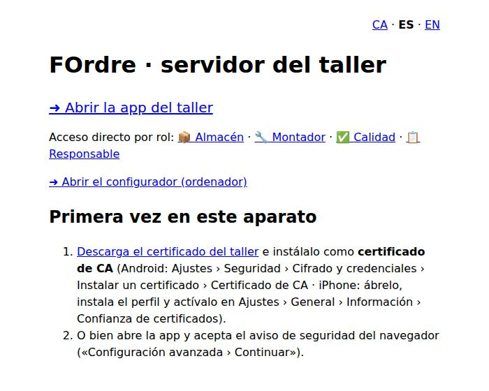
http://<dirección-del-servidor>:8080 (por ejemplo, http://192.168.1.50:8080). Se abre la página de ayuda, en el idioma del navegador (arriba se puede elegir CA · ES · EN).fordre-taller.crt.node servidor/fordre-servidor.js [--port 8443] [--port-http 8080] [--dades carpeta] [--clau PIN] [--nou-certificat]| Opción | Variable de entorno | Por defecto | Qué hace |
|---|---|---|---|
--port | FORDRE_PORT | 8443 | Puerto seguro (https) de las apps. |
--port-http | FORDRE_PORT_HTTP | 8080 | Puerto de la página de ayuda y del certificado. |
--dades | FORDRE_DADES | servidor/dades | Carpeta donde se guarda todo. |
--clau | FORDRE_CLAU | (ninguna) | Clave de red: una barrera adicional antes del PIN de cada persona. Hay que escribirla en el menú ⋮ de la app. |
--nou-certificat | — | — | Fuerza a hacer un certificado nuevo. |
Ejemplo: un servidor con una clave de red y los datos en un disco USB:
node servidor/fordre-servidor.js --clau 4821 --dades /media/usb/fordre-dadesTodo lo que hace el taller se guarda en servidor/dades/:
dades/
├── projectes/ un archivo por proyecto publicado
├── ordres/ las órdenes de cada proyecto
├── progres/ el progreso de cada orden (con una copia .bak del estado anterior)
├── fotos/ las fotos, por proyecto y orden
├── persones.json personas, roles y resumen de los PIN (nunca el PIN en claro)
└── certificat/ el certificado https del servidorHacer una copia de seguridad (en la Raspberry Pi, con una memoria USB montada en /media/usb):
sudo systemctl stop fordre
cp -r ~/FOrdre/servidor/dades /media/usb/fordre-dades-$(date +%Y%m%d)
sudo systemctl start fordreEn Windows, cierra la ventana del servidor y copia la carpeta servidor\dades donde quieras.
Restaurarla: detén el servidor, sustituye la carpeta dades por la copia y vuelve a arrancarlo.
Actualizar FOrdre: git pull y reiniciar el servidor (vea el punto 2.4). Los datos no se tocan.
Pulsa ⚙ Configuración en la barra de arriba del configurador. Los cambios se aplican al instante y se ven en la vista 3D. El botón Valores por defecto lo devuelve todo como al principio.
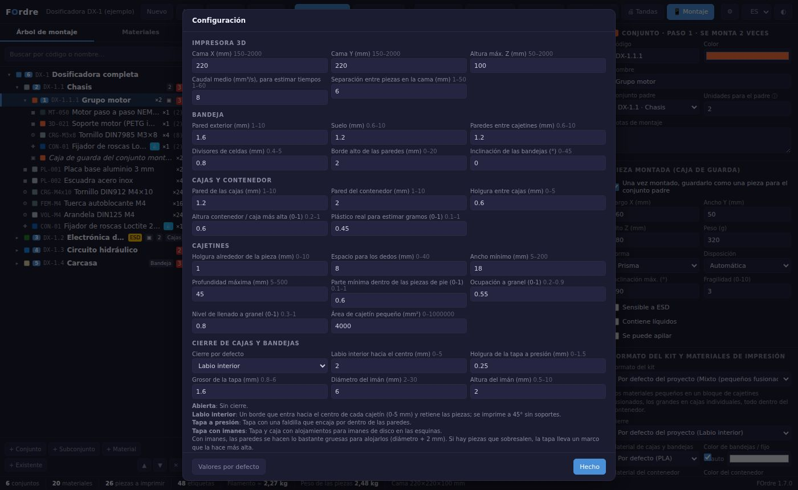
Impresora 3D
| Campo | Por defecto | Límites | Cuándo cambiarlo |
|---|---|---|---|
| Cama X / Cama Y (mm) | 220 × 220 | 150–2000 | Pon el tamaño útil de la cama de tu impresora. Las bandejas nunca lo superarán. |
| Altura máx. Z (mm) | 100 | 50–2000 | Altura máxima que quieres imprimir. |
| Caudal medio (mm³/s) | 8 | 1–60 | Para estimar las horas de impresión de cada tanda. |
| Separación entre piezas en la cama (mm) | 6 | 1–50 | Distancia entre piezas en las tandas de impresión. |
Bandeja
| Campo | Por defecto | Límites | Notas |
|---|---|---|---|
| Pared exterior (mm) | 1,6 | 1–10 | Más grosor, más resistencia y más filamento. |
| Suelo (mm) | 1,2 | 0,6–10 | |
| Paredes entre cajetines (mm) | 1,2 | 0,6–10 | |
| Divisores de celdas (mm) | 0,8 | 0,4–5 | Separan las unidades en disposición individual. |
| Borde alto de las paredes (mm) | 2 | 0–20 | Evita que las piezas rueden al mover la bandeja. |
| Inclinación de las bandejas (°) | 0 | 0–45 | Bandejas inclinadas sobre una cuña. Se limita sola si hay piezas que no se pueden tumbar. |
Cajas y contenedor
| Campo | Por defecto | Límites |
|---|---|---|
| Pared de las cajas (mm) | 1,2 | 1–10 |
| Pared del contenedor (mm) | 2 | 1–10 |
| Holgura entre cajas (mm) | 0,6 | 0–5 |
| Altura del contenedor respecto a la caja más alta (0–1) | 0,6 | 0,2–1 |
| Plástico real para estimar gramos (0–1) | 0,45 | 0,1–1 |
Cajetines
| Campo | Por defecto | Límites | Notas |
|---|---|---|---|
| Holgura alrededor de la pieza (mm) | 1 | 0–10 | Juego para que la pieza entre y salga bien. |
| Espacio para los dedos (mm) | 8 | 0–40 | Espacio para coger las piezas. |
| Ancho mínimo (mm) | 18 | 5–200 | Tiene que caber un dedo. |
| Profundidad máxima (mm) | 45 | 5–500 | |
| Parte mínima dentro de las piezas de pie (0–1) | 0,6 | 0,1–1 | Piezas que van de pie (líquidos): qué parte queda dentro. |
| Ocupación a granel (0–1) | 0,55 | 0,2–0,9 | Cuánto ocupa el material amontonado. |
| Nivel de llenado a granel (0–1) | 0,8 | 0,3–1 | Hasta dónde se llena (no hasta arriba del todo). |
| Área de cajetín pequeño (mm²) | 4000 | — | Por debajo, el cajetín es pequeño (importante para el formato mixto). |
Cierre de cajas y bandejas
| Campo | Por defecto | Notas |
|---|---|---|
| Cierre por defecto | Labio interior | Abierta, Labio interior, Tapa a presión o Tapa con imanes (vea el punto 3.3). |
| Labio interior hacia el centro (mm) | 2 | 0–5. Se imprime a 45°, sin soportes. |
| Holgura de la tapa a presión (mm) | 0,25 | Se calibra con la pieza de calibración. |
| Grosor de la tapa (mm) | 1,6 | |
| Diámetro y altura del imán (mm) | 6 × 2 | Los imanes de disco que tengas. |
| Tapa también en cada caja interior | Sí | Con contenedor. |
| Contenedores apilables | Sí | Todos con la misma planta y un pie que encaja en el de abajo. |
| Asas en los lados cortos | Sí | |
| QR grabado en las tapas | Sí | Se lee mejor si lo repasas con un rotulador. |
Identificación y ergonomía
Formato de los kits y materiales de impresión
| Campo | Por defecto |
|---|---|
| Formato por defecto | Mixto (pequeños fusionados) |
| Material de cajas y bandejas | PLA |
| Material para piezas ESD | PETG-ESD (antiestático) |
| Material del contenedor | PETG |
| Color de las cajas individuales | El del material (también: el del conjunto, por tipo, o un color fijo) |
| Color fijo / bandejas, color del contenedor | Gris claro / gris azulado |
Materiales de impresión disponibles: PLA, PETG, ABS, ASA, PC, PA (nailon), PP, TPU (flexible), PETG-ESD (antiestático) y PLA con fibra de carbono. Las cajas de piezas sensibles a ESD se hacen aparte con el material antiestático.
Ejemplo. Una impresora con una cama de 250 × 210 mm, cajas de PETG, tapas con imanes de 8 × 3 mm y etiquetas de cinta de 12 mm: Cama X 250, Cama Y 210, Material de cajas PETG, Cierre Tapa con imanes, Diámetro del imán 8, Altura del imán 3, Etiquetas Cinta 12 mm.
Cada impresora imprime un poco diferente. La pieza de calibración ajusta las tapas y los encajes a la tuya.
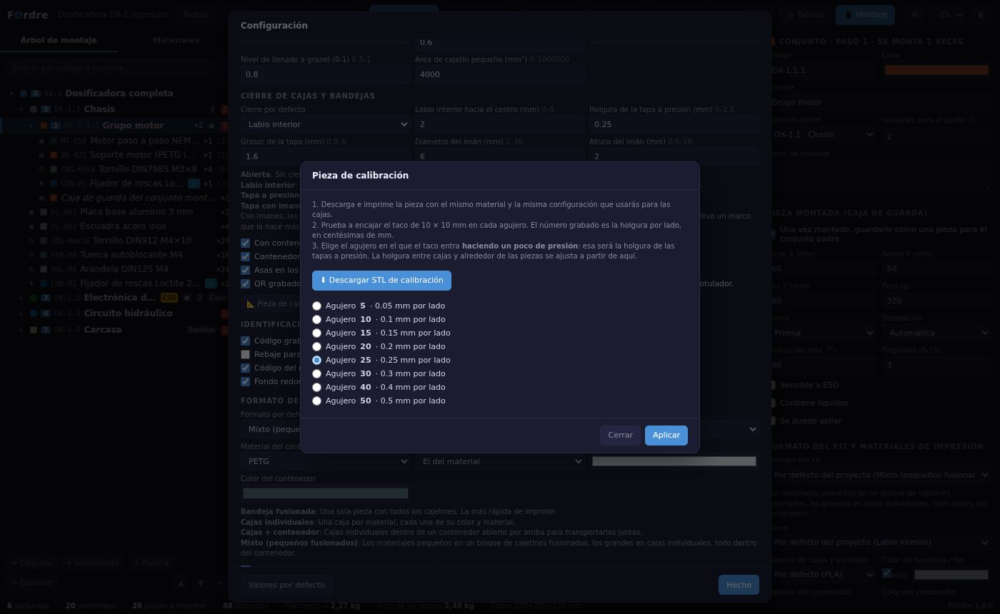
Formatos del kit (para todo el proyecto o para cada conjunto):
| Formato | Cómo es | Cuándo elegirlo |
|---|---|---|
| Bandeja fusionada | Una sola pieza con todos los cajetines. | La más rápida de imprimir. Kits pequeños. |
| Cajas individuales | Una caja por material, cada una de su color y material. | Cuando los materiales se reponen por separado. |
| Cajas + contenedor | Las cajas individuales dentro de un contenedor abierto por arriba, con muescas para cogerlas. | Para llevar todo el kit a la vez. |
| Mixto (recomendado) | Los materiales pequeños en un bloque de cajetines fusionados, los grandes en cajas individuales, todo dentro del contenedor. | El mejor equilibrio. |
Cierres:
| Cierre | Cómo es | Cuándo elegirlo |
|---|---|---|
| Abierta | Sin cierre. | Bandejas que no se mueven. |
| Labio interior (0–5 mm) | Un borde que entra hacia el centro de cada cajetín y retiene las piezas. | Por defecto: no hace falta imprimir tapa. |
| Tapa a presión | Tapa con una faldilla que encaja por dentro. | Para transportar. Calibra la holgura (punto 3.2). |
| Tapa con imanes | Imanes de disco en las esquinas de la caja y de la tapa. | Se abre y se cierra muy deprisa. Las paredes se hacen más gruesas para alojarlos. |
El formato se elige en ⚙ Configuración › Etiquetas (o en la ficha de cualquier material, en el apartado Etiqueta) y se aplica a todo el proyecto. Con A medida… se escriben el ancho y el alto.
| Formato | Tamaño | Impresora |
|---|---|---|
| Cinta 9 / 12 / 18 / 24 mm | Largo automático | Brother P-touch, Dymo, cintas laminadas |
| Rollo térmico | 62 × 29, 50 × 25 o 40 × 20 mm | Impresoras térmicas de etiquetas |
| Hoja A4 | 70 × 37 (3 × 8), 48,5 × 25,4 (4 × 11), 38 × 21,2 (5 × 13), 25,4 × 10 (7 × 27) | Impresora normal con hojas adhesivas |
| A medida | La que quieras | — |
Cada etiqueta lleva el código, el nombre, la cantidad, el paso, el conjunto, los colores, un QR y un código de barras (Code 128). La etiqueta se adapta al ancho del cajetín: si es muy estrecho, se quita el QR. Los textos de la etiqueta salen en el idioma del configurador. Al imprimir, elige escala 100 % (sin «ajustar a la página»).
Primer uso. La primera vez que se abre la app con el servidor, pide crear el Responsable:
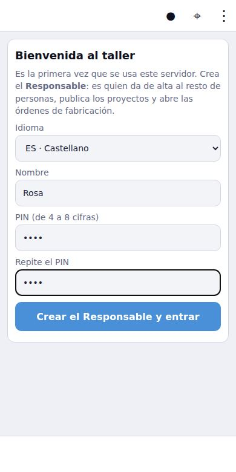
1111, que después cambiarás por uno seguro).Si el servidor todavía no tiene ningún proyecto, la app lo dice. El Responsable lo publica desde el configurador (punto 5.10), o puede tocar Proyecto de ejemplo para probarlo: si entra como Responsable, el ejemplo se publica solo en el servidor.
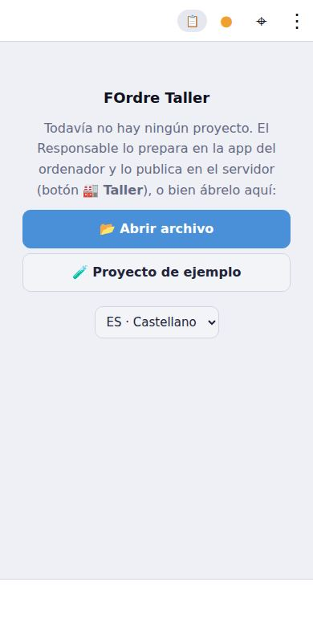
Dar de alta al resto de personas. Como Responsable: 📋 Panel › 👥 Personas.
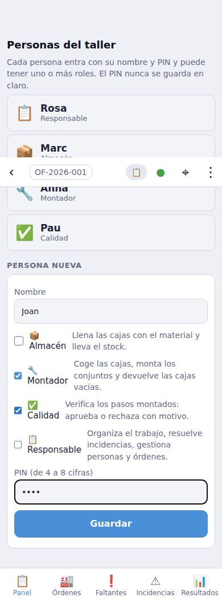
En el ejemplo:
| Persona | Roles | PIN de ejemplo |
|---|---|---|
| Rosa | Responsable | 1111 |
| Marc | Almacén | 2222 |
| Anna | Montador | 3333 |
| Pau | Calidad | 4444 |
| Joan | Montador y Calidad | 5555 |
Qué puede hacer cada rol:
| Rol | Puede hacer |
|---|---|
| 📦 Almacén | Llenar y vaciar cajas, marcar faltantes y piezas defectuosas, stock, devolver cajas. |
| 🔧 Montador | Coger cajas, empezar y marcar pasos como montados (también con faltantes), completarlos, registrar piezas rotas, devolver cajas. |
| ✅ Calidad | Verificar (aprobar o rechazar), decidir qué se hace con las piezas defectuosas, registrarlas, resolver incidencias. |
| 📋 Responsable | Todo lo anterior, y además publicar proyectos, abrir y cerrar órdenes, asignar pasos y gestionar personas. |
Todo el mundo puede abrir incidencias, hacer fotos y consultar el registro y los resultados.
Regla de los cuatro ojos. Quien ha montado un paso no lo puede verificar. Joan, que tiene los dos roles, puede verificar lo que monta Anna, pero no lo que monta él mismo. El Responsable no tiene esta limitación.
Cambiar un PIN o los roles: Personas › toca la persona › cambia lo que haga falta › Guardar. Si dejas el PIN vacío, no se cambia.
Dar de baja a alguien: Personas › toca la persona › Dar de baja. Ya no podrá entrar y se cierran sus sesiones. El registro de lo que hizo se conserva. El taller no deja dar de baja al último Responsable.
Si un aparato siempre se usa para el mismo trabajo (la tableta del almacén, la de la línea de montaje…), hazle un acceso directo a su rol:
| Rol | Dirección |
|---|---|
| 📦 Almacén | https://<servidor>:8443/muntatge.html?rol=magatzem |
| 🔧 Montador | https://<servidor>:8443/muntatge.html?rol=muntador |
| ✅ Calidad | https://<servidor>:8443/muntatge.html?rol=qualitat |
| 📋 Responsable | https://<servidor>:8443/muntatge.html?rol=responsable |
Los nombres de los roles en la dirección (magatzem, muntador, qualitat, responsable) son fijos, sea cual sea el idioma. Para que además salga en castellano, añade &lang=es, por ejemplo …/muntatge.html?rol=magatzem&lang=es.
Abre la dirección y guárdala en la pantalla de inicio. La página de ayuda del servidor (http://<servidor>:8080) tiene los cuatro enlaces. Con la app instalada, si mantienes pulsado el icono, también salen los accesos de los roles. Si la persona que entra no tiene ese rol, la app la avisa y usa el suyo.
En la carpeta 2-taller del ZIP están los mismos accesos en archivos: rol-magatzem.html, rol-muntador.html, rol-qualitat.html y rol-responsable.html.
FOrdre se puede usar en catalán, castellano e inglés. Dónde se elige:
| Herramienta | Dónde |
|---|---|
| Configurador | Selector CA / ES / EN en la barra de arriba, al lado de ◐. |
| App del taller | Menú ⋮ › Idioma, o debajo de la lista de personas de la pantalla de entrada. |
| Página de ayuda del servidor | Sale en el idioma del navegador. Arriba están los enlaces CA · ES · EN. |
?lang=ca, ?lang=es o ?lang=en. Por ejemplo, la tableta del almacén en castellano: https://<servidor>:8443/muntatge.html?rol=magatzem&lang=es.FOrdre lee dos tipos de lista, en Excel (.xlsx, .xls, .ods) o CSV (.csv, separado por ;, , o tabulador). Las columnas se reconocen en catalán, castellano e inglés, y antes de importar se pueden corregir.
Descarga la plantilla con el botón Plantilla CSV del configurador: las cabeceras salen en el idioma del configurador. Cada fila es un material dentro de un conjunto. Una fila con conjunto pero sin código de material define el conjunto mismo.
| Columna | Obligatoria | Qué va | Ejemplo |
|---|---|---|---|
conjunto | Sí | Código del conjunto donde se monta el material. | XAS |
nombre conjunto | — | Nombre del conjunto. | Chasis |
padre | — | Código del conjunto donde se monta este conjunto (vacío si es la máquina). | MAQ |
codigo | Sí* | Código del material. *Vacío en una fila de conjunto. | PL-001 |
nombre | — | Nombre del material. | Placa base aluminio |
cantidad | Sí | Cuántas lleva cada unidad del conjunto. En una fila de conjunto: cuántas unidades necesita el padre. | 2 |
x, y, z | Recomendado | Medidas de la pieza, en mm (largo, ancho, alto). | 180, 120, 3 |
peso | — | Peso de una unidad, en g. | 175 |
tipo | — | pieza, tornillo (tornillería y material pequeño) o consumible. | pieza |
forma | — | box (prisma) o cylinder (cilindro). | box |
esd | — | Sensible a la electricidad estática: 1/0 (también sí/no). | 0 |
liquido | — | Contiene líquidos: 1/0. Irá de pie. | 1 |
angulo max | — | Inclinación máxima en grados (90 = se puede tumbar del todo). | 30 |
apilable | — | Se puede apilar: 1/0. | 1 |
max apilado | — | Cuántas unidades se pueden apilar. | 5 |
fragilidad | — | Fragilidad de 0 a 10. | 7 |
disposicion | — | auto, individual, apilado, capa o granel. | granel |
color | — | Color del material o del conjunto, en #RRGGBB. | #9AA5B1 |
origen | — | propio (diseño propio) o comprado. | comprado |
proveedor | — | Proveedor o referencia. Agrupa la lista de compra y las devoluciones. | Würth |
notas | — | Notas libres. | |
par de apriete | — | Par de apriete en N·m. Sale en el paso de montaje. | 2.5 |
nota montaje | — | Nota de montaje de este elemento. | En cruz |
instrucciones | — | (Fila de conjunto) pasos de montaje, separados por |. | Presentar las placas | Montar las escuadras | Apretar en cruz |
herramientas | — | (Fila de conjunto) herramientas necesarias. | Llave Allen 3 mm, llave dinamométrica |
cierre | — | (Fila de conjunto) ninguno, labio, presion o imanes. | imanes |
formato kit | — | (Fila de conjunto) fusionado, individual, contenedor o mixto. | contenedor |
material caja | — | Material de impresión de la caja de este material. | PETG |
color caja | — | Color de la caja de este material. | #FDD835 |
trazabilidad | — | Qué hay que anotar de cada pieza: lote, serie (número de serie) o vacío (no hace falta). Vea el punto 6.11. | serie |
Los valores también se entienden en catalán e inglés (por ejemplo, peca/part, cargol/screw, llavi/lip).
Ejemplo completo (es la plantilla, leída como tabla):
| conjunto | nombre conjunto | padre | codigo | nombre | cantidad | x | y | z | tipo | disposicion | par de apriete | instrucciones |
|---|---|---|---|---|---|---|---|---|---|---|---|---|
| MAQ | Máquina completa | 1 | Montaje final | Prueba de funcionamiento | |||||||||
| XAS | Chasis | MAQ | PL-001 | Placa base aluminio | 2 | 180 | 120 | 3 | pieza | auto | ||
| XAS | Chasis | MAQ | CRG-M4x10 | Tornillo DIN912 M4x10 | 24 | 10 | 7 | 7 | tornillo | granel | 2.5 | |
| XAS | Chasis | MAQ | CON-01 | Fijador de roscas 243 | 1 | 25 | 25 | 75 | consumible | individual | ||
| MOT | Grupo motor | XAS | 2 | 60 | 50 | 80 | Encarar el motor | Apretar los 4 tornillos | |||||
| MOT | Grupo motor | XAS | MT-050 | Motor NEMA17 | 1 | 42 | 42 | 48 | pieza | auto | ||
| ELE | Electrónica | MAQ | PCB-100 | Placa de control | 1 | 100 | 70 | 18 | pieza | individual |
Se lee así: la máquina (MAQ) tiene un chasis (XAS) y una electrónica (ELE). El chasis lleva 2 placas, 24 tornillos y un fijador de roscas, y también 2 grupos motor (MOT), que se montan antes y se guardan en una caja de guarda de 60 × 50 × 80 mm.
Exporta la lista de materiales con niveles (indentada) de tu programa: FreeCAD, Fusion 360, SolidWorks, Inventor, Onshape… Tiene que tener:
1, 2, 3, o bien 1, 1.1, 1.1.2, o el nombre sangrado);Si lleva medidas (Length, Width, Height) y peso (Mass), mejor. Ejemplo (exemples/bom_cad_solidworks.csv):
Item No.,Part Number,Description,QTY.,Length (mm),Width (mm),Height (mm),Mass (g)
1,ASM-100,Base assembly,1,300,200,80,2400
1.1,PL-10,Base plate,1,180,150,5,900
1.2,SUB-20,Bracket subassembly,2,50,40,30,120
1.2.1,BR-1,Bracket,1,50,40,3,40Las filas que tienen hijos se convierten en conjuntos. Si llevan medidas, son la pieza montada, y tendrán caja de guarda.
Consejos para exportar:
Cuando un subconjunto se monta antes y hay que llevarlo al conjunto padre, dale las medidas de la pieza acabada (en la fila del conjunto, o en la ficha Pieza montada). FOrdre:
| Problema | Solución |
|---|---|
| Un material sale con medidas 0 y un cajetín pequeño. | Rellena x, y y z. Sin medidas, FOrdre no sabe cuánto espacio necesita. |
| Los tornillos ocupan demasiado. | Pon disposicion = granel y tipo = tornillo. |
| Una botella sale tumbada. | Pon liquido = 1 y angulo max bajo: irá de pie. |
| La BOM no hace conjuntos. | Revisa que la columna de nivel esté bien asignada en el diálogo de importación. |
| Las unidades salen muy grandes o muy pequeñas. | Elige las Unidades de medida (mm, cm, m o pulgadas) y de peso (g, kg o lb) en el diálogo. |
| Instrucciones en una sola línea. | Separa los pasos con |. |
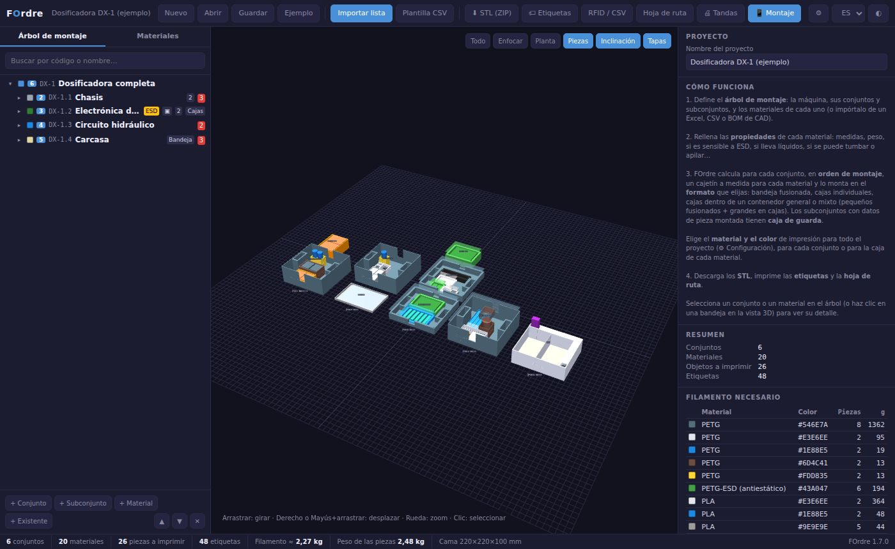
La pantalla tiene tres partes:
En la barra de arriba están: Nuevo, Abrir, Guardar, Ejemplo, Importar lista, Plantilla CSV, ⬇ STL (ZIP), 🏷 Etiquetas, RFID / CSV, Hoja de ruta, 🖨 Tandas, 📱 Montaje, 🏭 Taller (solo con el servidor), ⚙ Configuración (en pantallas justas, solo el icono ⚙), el selector de idioma CA / ES / EN y ◐ (tema claro u oscuro).
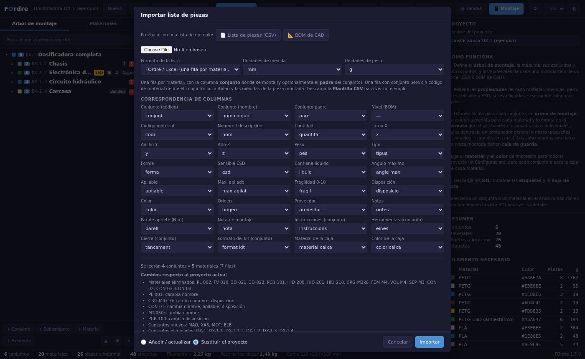
Con una BOM de CAD, el diálogo reconoce la columna de nivel:
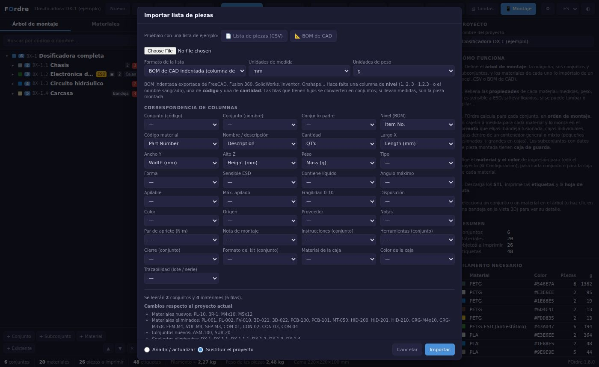
Las listas de ejemplo que vienen con FOrdre tienen los nombres de las piezas en catalán: son datos, y se muestran tal como están escritos.
Después de importar, FOrdre calcula las cajas y las muestra en 3D. Toca un conjunto en el árbol y se resaltan sus cajas.
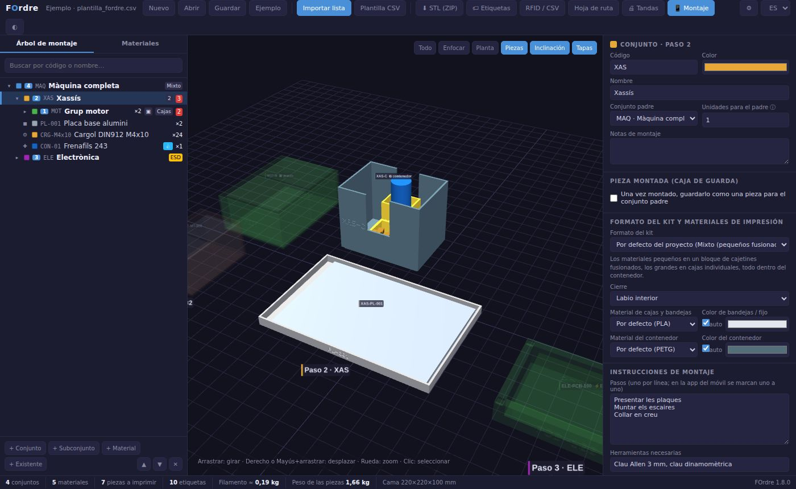
Controles de la vista 3D:
| Acción | Cómo |
|---|---|
| Girar | Arrastra con el botón izquierdo. |
| Desplazar | Arrastra con el botón derecho, o con Mayús + botón izquierdo. |
| Zoom | Rueda del ratón. |
| Seleccionar | Clic sobre una caja. |
| Verlo todo / enfocar la selección | Botones Todo y Enfocar, o teclas Inicio y F. |
| Vista desde arriba | Botón Planta. |
| Mostrar u ocultar las piezas, la inclinación o las tapas | Botones Piezas, Inclinación y Tapas. |
Marcas en el árbol: el número azul es el paso de montaje; ESD indica piezas sensibles a la estática; ▣ quiere decir que tiene caja de guarda; Cajas o Bandeja indican el formato; el número rojo son los avisos.
Toca un material en el árbol (dentro de su conjunto) o en la pestaña Materiales.
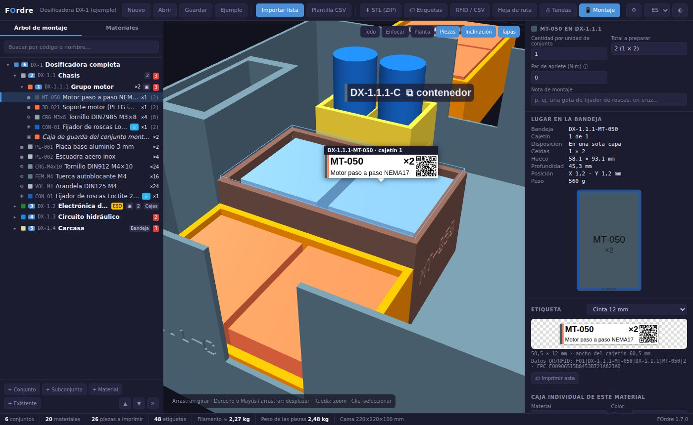
La ficha tiene estas partes:
Ejemplo: el motor NEMA17 (MT-050) va en una sola capa, con 2 celdas (una para cada grupo motor), dentro del contenedor DX-1.1.1-C.
Toca un conjunto en el árbol.
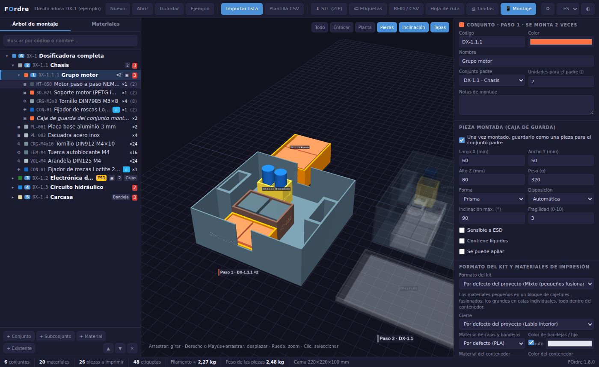
Con los botones + Conjunto, + Subconjunto, + Material, + Existente (un material que ya está), ▲ ▼ (mover) y ✕ (eliminar) se puede editar el árbol a mano.
La pestaña Materiales muestra todos los materiales de la máquina con el total de cada uno. Desde aquí se pueden editar y exportar en CSV.
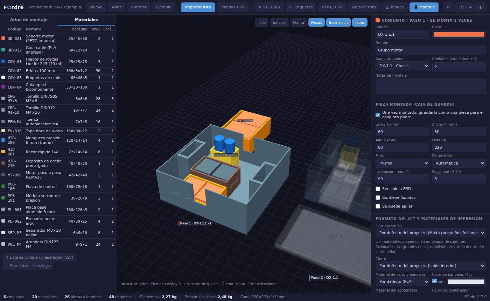
Las cajas (STL y 3MF)
LEEME.txt con el filamento necesario. El nombre de cada archivo lleva el paso, el objeto, el material y el color, por ejemplo 01_DX-1.1.1-C_PETG_546E7A.stl.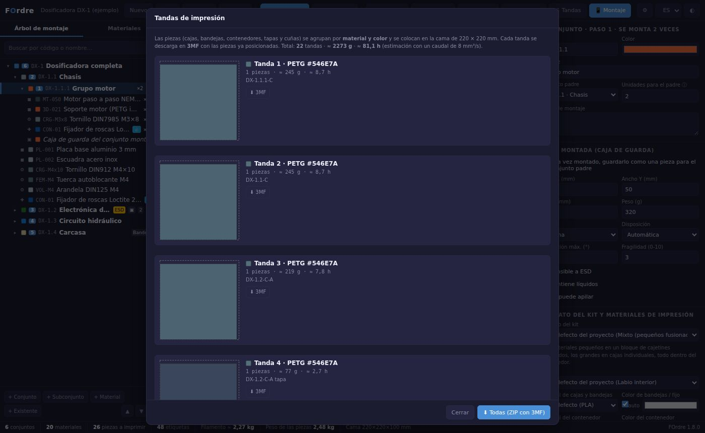
Consejos de impresión:
Las etiquetas
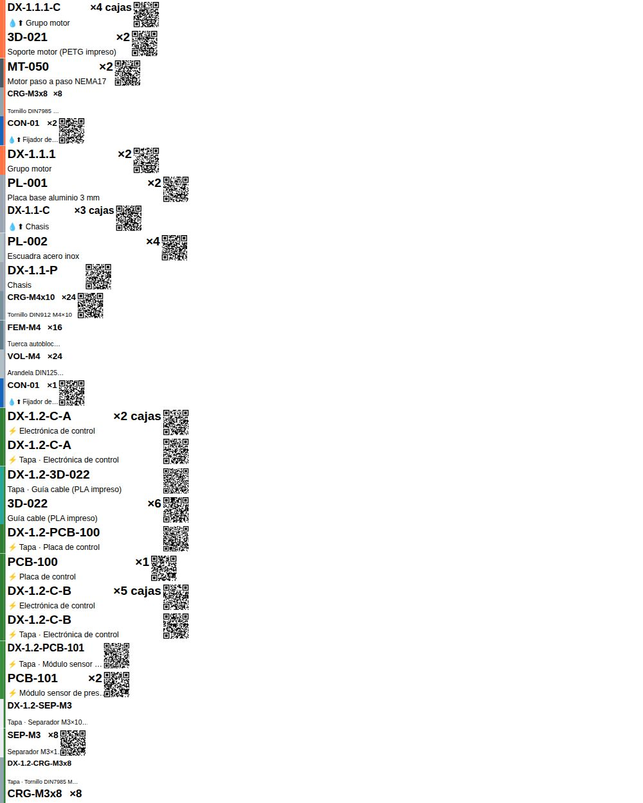
La hoja de ruta
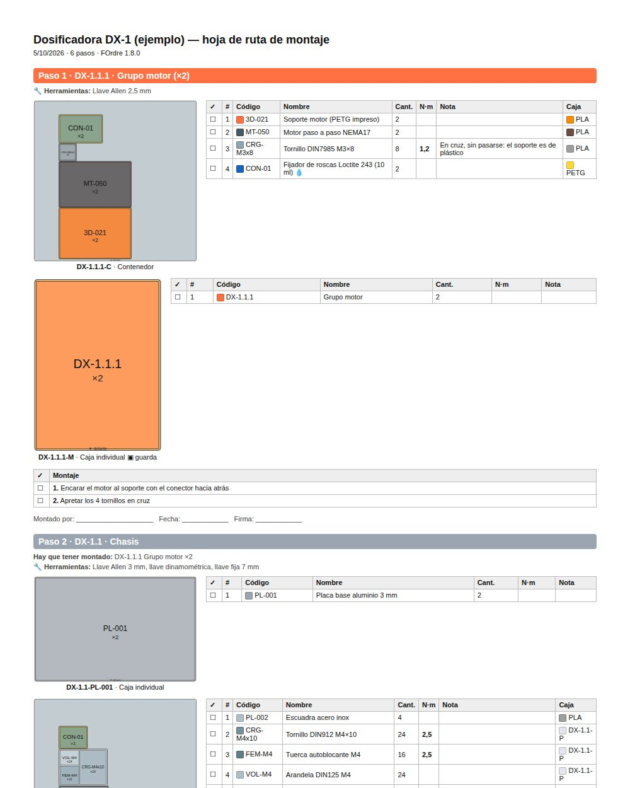
Vuelve a importar la lista (modo Añadir / actualizar). Antes de importar, FOrdre muestra qué ha cambiado (materiales nuevos o eliminados, medidas, cantidades) y qué cajas hay que volver a imprimir. Cada revisión queda en la ficha del proyecto, en Revisiones de la lista de materiales.
.fordre.json. Guárdalo con la documentación de la máquina..fordre.json.Con el servidor del taller (recomendado)
https://<servidor>:8443/index.html.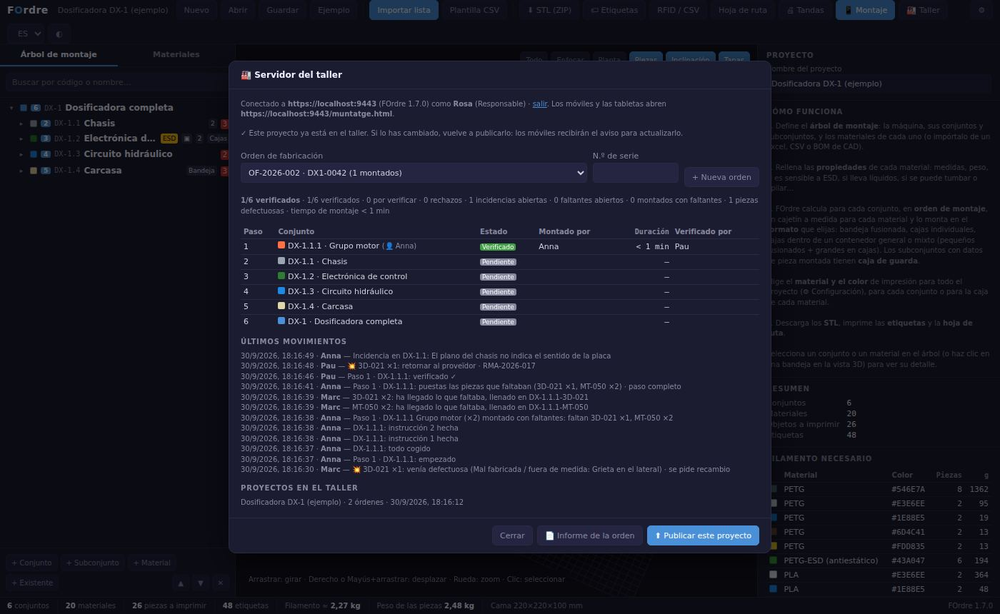
Si modificas el proyecto, vuelve a publicarlo: los móviles recibirán el aviso para actualizarlo (el punto de estado se convierte en ⟳).
Sin servidor
Pulsa 📱 Montaje. Puedes pasar el proyecto de estas maneras:
.fordre.json (en la app: menú ⋮ › Abrir archivo de proyecto).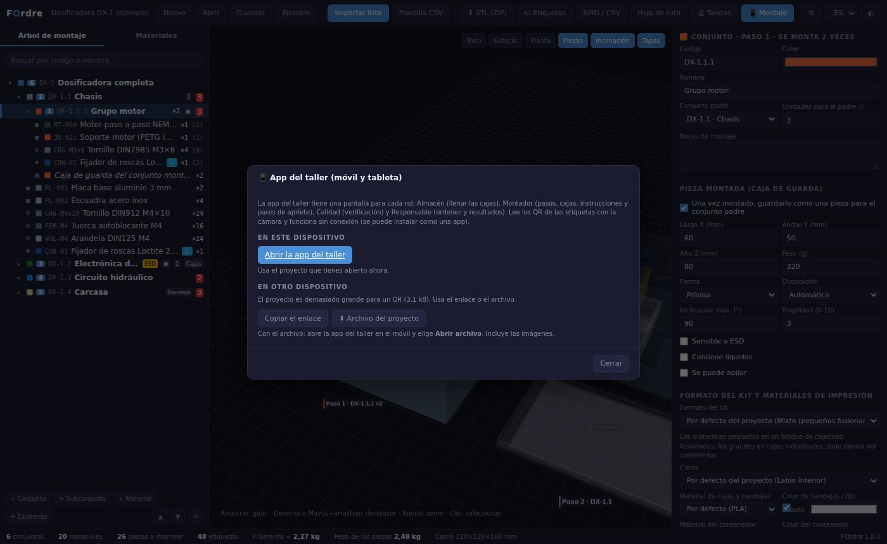
https://<servidor>:8443/muntatge.html, o el acceso directo de tu rol).| Elige el nombre | Escribe el PIN |
|---|---|
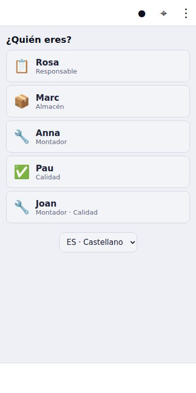 | 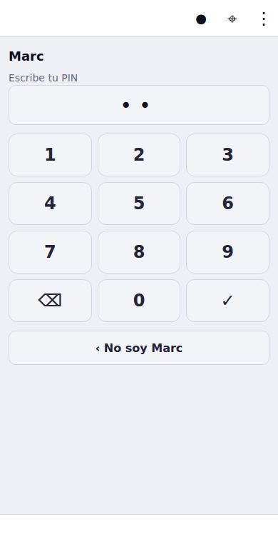 |
La cabecera, de izquierda a derecha:
OF-2026-002): tócalo para cambiar de orden. Si sale 🔒, la orden está cerrada.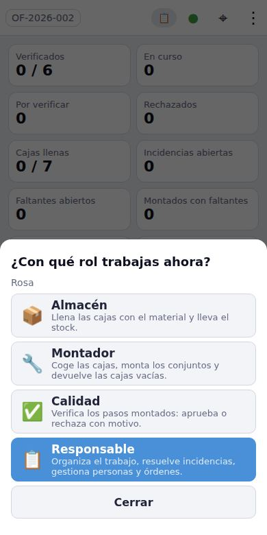
En la parte de abajo están las pestañas de tu rol. El número entre paréntesis indica cuántas cosas hay pendientes (faltantes, incidencias, defectos).
Crear una orden de fabricación. Pestaña Órdenes:
OF-2026-002); lo puedes cambiar.DX1-0042) y unas notas (por ejemplo, Cliente: Laboratorios Vallès).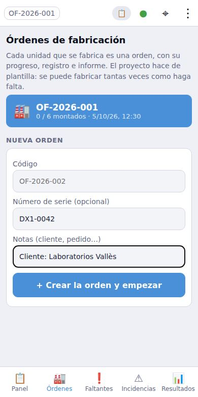
Un aparato que entra por primera vez se pone en la orden más reciente; después, cada aparato recuerda la última orden en la que ha trabajado. Para cambiar de orden, toca el código en la cabecera.
Asignar pasos. En el Panel, en cada paso, elige la persona en Asignado a. El montador lo verá marcado con 👤 y el botón Continuar le propondrá primero los suyos.
Pestaña Llenar. Muestra las cajas de la orden por paso, con su estado: Vacía, Llenándose, Llena, Con faltantes, En uso o Devuelta.
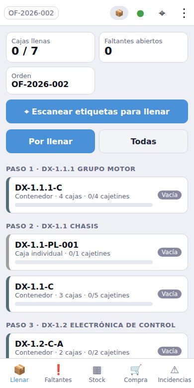
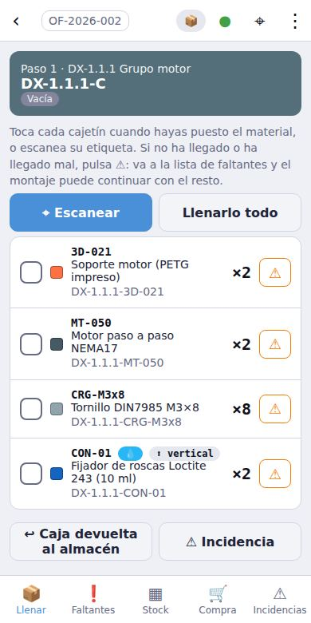
Cuando hay un problema con un material: botón ⚠
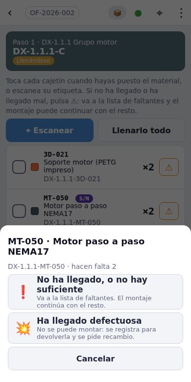
Cuando llega el material que faltaba: escanea la etiqueta del cajetín (o tócalo y confirma que ha llegado). El cajetín se completa, el faltante se cierra solo y el montador lo verá.
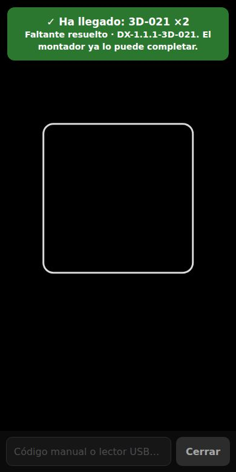
Pestaña Faltantes. Todo lo que falta, agrupado por material: cuántos, para qué paso y caja, desde cuándo, proveedor y nota. Botones Copiar, Compartir y ⬇ CSV para enviarlo a compras. También está el acceso a las piezas defectuosas y a las devoluciones.
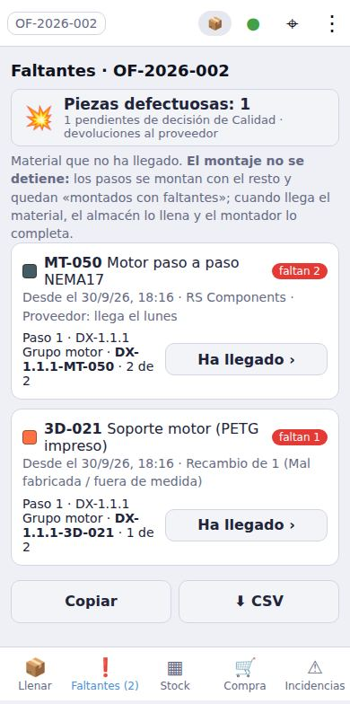
Pestaña Stock. Hace falta es lo que todavía falta poner en las cajas; Tengo es el stock. Los botones − y + suman o restan una unidad, y escribir un número hace un recuento.
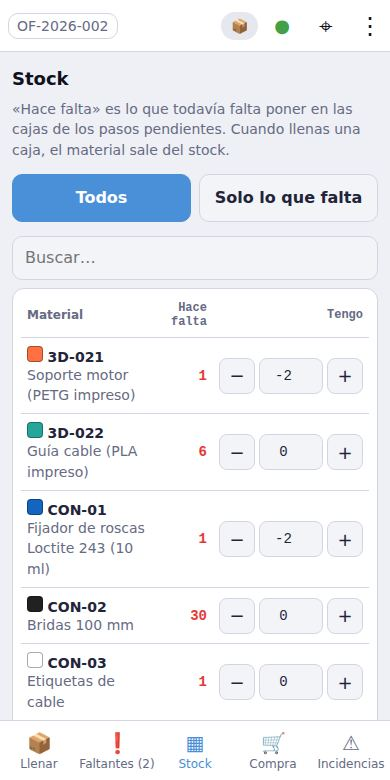
Pestaña Compra. Lo que hay que comprar para acabar la orden, agrupado por proveedor. Los faltantes salen marcados como ❗ urgentes.
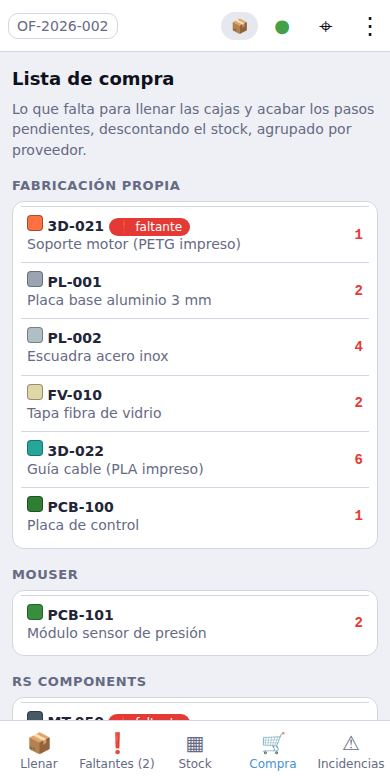
Devolver las cajas. Cuando una caja vuelve vacía y limpia al almacén, ábrela y pulsa ↩ Caja devuelta al almacén. También lo puede hacer el montador.
Pestaña Pasos. Los pasos en orden de montaje, con su estado. Un paso queda bloqueado hasta que sus subconjuntos están montados (aunque sea con faltantes). Continuar lleva al siguiente que te toca.
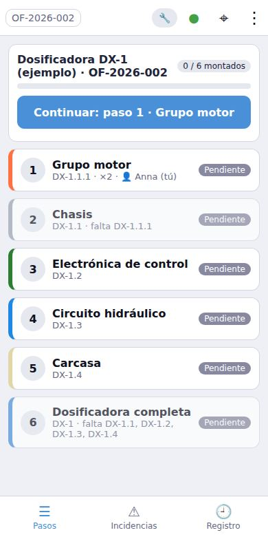
Dentro de un paso, de arriba abajo:
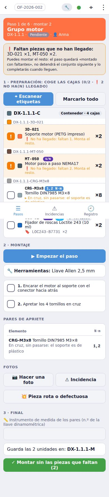
Montar con faltantes. Si falta alguna pieza, el botón dice ✓ Montar sin las piezas que faltan. El paso queda «Montado con faltantes» y no bloquea el conjunto siguiente: se puede continuar con el resto de la máquina. Cuando llega el material, el paso dice «Ya han llegado…» y el botón ✓ Completar queda activo.
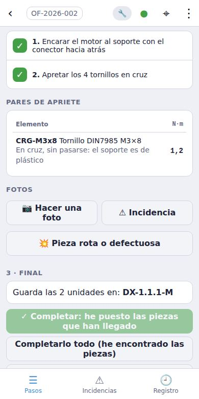
Completarlo todo (he encontrado las piezas) sirve cuando las piezas que faltaban se han encontrado por otro camino. La app pide confirmación.
Deshacer «montado» devuelve el paso al estado anterior (por ejemplo, si te has equivocado de paso). No se puede hacer si Calidad ya lo ha verificado.
Pestaña Verificar. Los pasos se muestran en cuatro grupos:
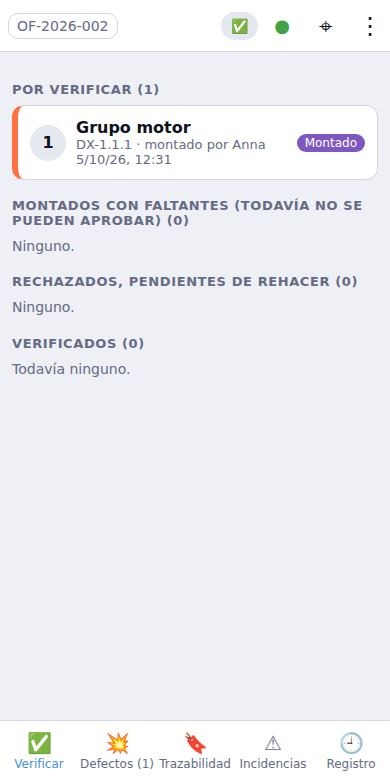
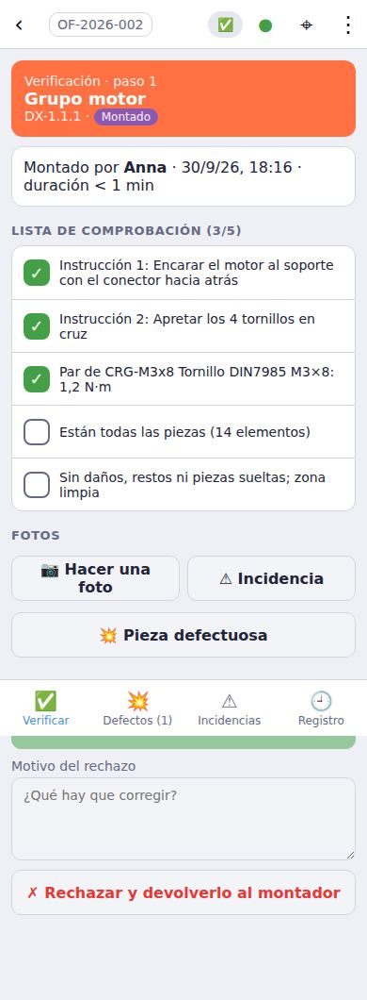
Una pieza puede llegar mal (la detecta el Almacén, con el botón ⚠ del cajetín) o romperse o estropearse al montar (el Montador o Calidad, con 💥 Pieza rota o defectuosa).
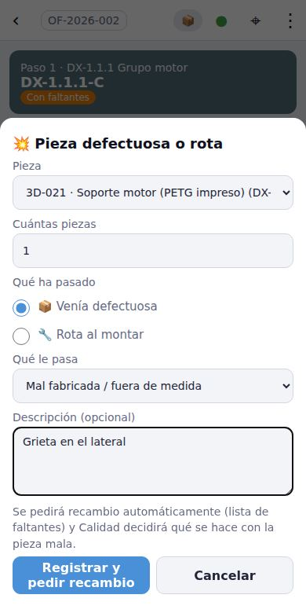
Qué pasa a continuación:
Calidad decide qué se hace con la pieza mala. Pestaña 💥 Defectos:
| Decisión | Cuándo |
|---|---|
| ↩ Devolver al proveedor | Venía defectuosa. En la nota, el número de devolución (por ejemplo, RMA-2026-017). |
| 🗑 Chatarra | No tiene arreglo. |
| 🛠 Reparar / recuperar | Se puede arreglar. |
| ✓ Aceptar tal como está | Se puede usar igualmente. Si la vuelves a poner en la caja, el Almacén tiene que pulsar Ha llegado para cerrar el recambio. |
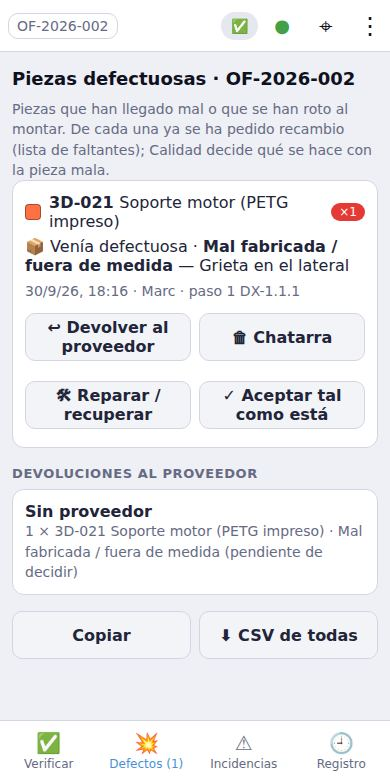
Debajo está la lista de devoluciones por proveedor, con los botones Copiar, Compartir y ⬇ CSV para enviarla.
Cualquier persona puede abrir una incidencia desde la pestaña Incidencias, o con el botón ⚠ Incidencia de un paso o de una caja:
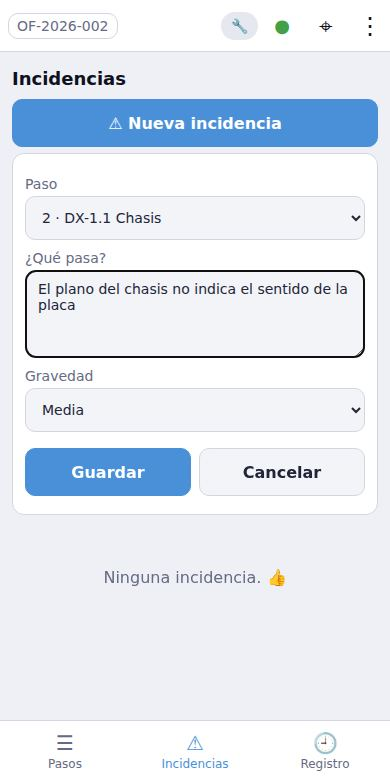
Calidad y el Responsable la marcan como resuelta, con una explicación.
Panel. El estado de la orden de un vistazo:
Botones: 👥 Personas, 📊 Resultados, 💥 Defectos y 🔒 Cerrar la orden.
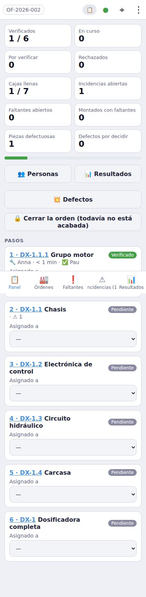
Resultados. Los indicadores de la orden:
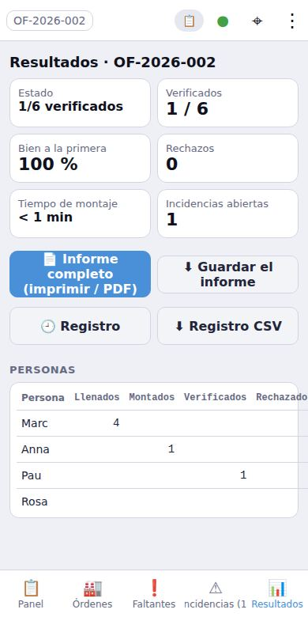
📄 Informe completo abre el informe de la orden, listo para imprimir o guardar en PDF (en el diálogo de imprimir, elige Guardar como PDF). Sale en el idioma de quien lo abre y lleva:
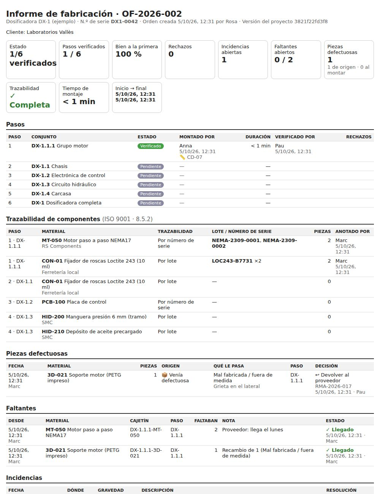
Cerrar la orden. En el Panel, 🔒 Cerrar la orden. Si quedan pasos por verificar, faltantes o defectos por decidir, la app lo avisa antes. Una orden cerrada solo se puede consultar. Si hace falta, se puede 🔓 Reabrir.
Fabricar otra unidad. Crea una orden nueva (punto 6.2). El proyecto es el mismo; el progreso empieza de cero.
Si un aparato pierde la Wi-Fi, el punto de la cabecera se pone 🔴 y la app sigue funcionando:
La norma ISO 9001 (apartado 8.5.2) pide poder identificar el producto y, cuando hace falta, saber qué piezas concretas lleva cada unidad fabricada. FOrdre lo hace así:
1. Decidir qué materiales son trazables. En el configurador, en la ficha de cada material, el campo Trazabilidad (ISO 9001):
| Opción | Cuándo elegirla | Ejemplo |
|---|---|---|
| No hace falta | Tornillería común, consumibles sin lote. | Tornillos M3, bridas. |
| Por lote | Piezas o productos que el proveedor identifica por partidas. | Fijador de roscas, aceites, mangueras, placas de una misma hornada. |
| Por número de serie | Piezas con un número único cada una. | Motores, placas electrónicas, sensores. |
También se puede poner en la lista de materiales, con la columna trazabilidad (punto 4.1).
2. El Almacén anota el lote o los números de serie al llenar. Al tocar (o escanear) el cajetín de un material trazable se abre este formulario:
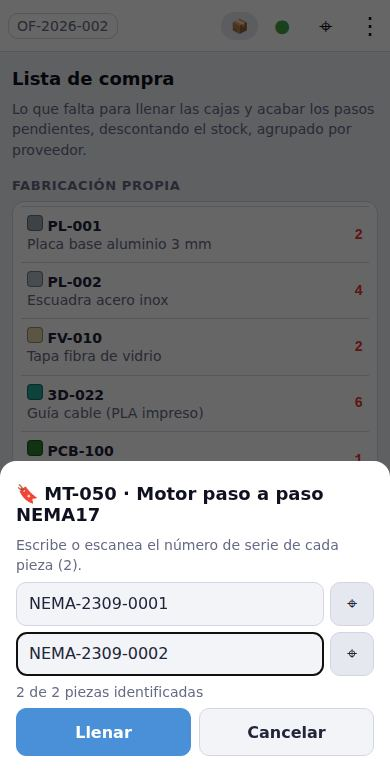
3. Faltantes y piezas defectuosas. Si llegan menos, solo se anotan las que se ponen; cuando llega el resto, el formulario sale con los números que ya hay y los campos nuevos vacíos. Si una pieza es defectuosa, el formulario de pieza defectuosa pide qué número de serie o lote es: sale de la caja y queda en la lista de devoluciones con su identificación.
4. El Montador. En el paso ve los lotes y números de serie de cada cajetín. Si alguna pieza trazable no ha pasado por el almacén, la app le pide el lote o el número de serie antes de marcar el paso como montado. Si el paso tiene pares de apriete, hay que escribir el instrumento de medida con el que se han dado (por ejemplo, el número de la llave dinamométrica, CD-07). El aparato lo recuerda para la próxima vez.
5. Calidad. En la verificación está el apartado 🔖 Trazabilidad con los lotes y números de serie y el instrumento de medida, y un punto más en la lista de comprobación: los lotes y números de serie anotados coinciden con las piezas montadas. No se puede aprobar un paso con piezas trazables sin identificar (Calidad las puede anotar con 🔖 Anotar).
6. La pantalla 🔖 Trazabilidad (pestaña de Calidad; para el Responsable, botón en el Panel):
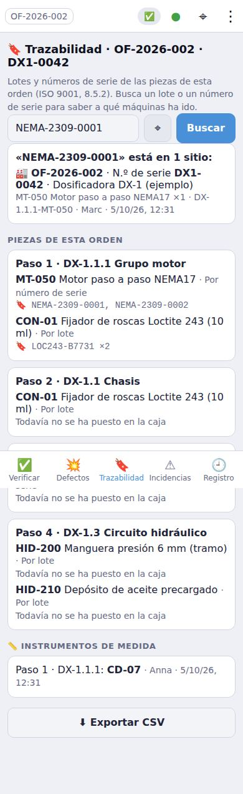
7. El informe de la orden lleva la sección Trazabilidad de componentes (ISO 9001 · 8.5.2) y el indicador Trazabilidad (✓ completa o cuántas faltan). Al cerrar la orden, la app avisa si hay piezas sin identificar.
muntatge.html y toca Proyecto de ejemplo, o abre el archivo .fordre.json del configurador (menú ⋮ › Abrir archivo de proyecto).Marc llena el contenedor del Grupo motor. Los motores NEMA17 no han llegado.
DX-1.1.1-C, en el cajetín MT-050, pulsa ⚠ › No ha llegado › ¿Cuántos has podido poner? 0 › nota Proveedor: llega el lunes. Llena el resto con Llenarlo todo.MT-050. La app dice «Ha llegado · Faltante resuelto».Uno de los soportes impresos 3D-021 llega agrietado.
3D-021 › ⚠ › Ha llegado defectuosa › 1 pieza › Venía defectuosa › Mal fabricada / fuera de medida › descripción «Grieta en el lateral» › Registrar y pedir recambio.Al apretar, a Anna se le pasa la rosca de 2 tornillos M3×8.
CRG-M3x8 › 2 › Rota al montar › Rota › «Rosca pasada al apretar» › Registrar y pedir recambio.Menú ⋮ › 👤 Cambiar de persona. Si hay cambios sin enviar, la app lo avisa. Los cambios de cada persona se envían con su nombre aunque ya haya entrado otra.
Rosa: Panel › Personas › la persona › Dar de baja. Sus sesiones se cierran en todos los aparatos.
Marc prefiere trabajar en castellano, Anna en catalán y un técnico de mantenimiento externo, en inglés.
&lang=es, &lang=ca o &lang=en.El proveedor del fijador de roscas avisa de que el lote LOC243-B7731 no cumple la especificación.
LOC243-B7731 › Buscar.| Qué pasa | Por qué | Qué hacer |
|---|---|---|
| El móvil no abre la app del servidor. | No está en la misma Wi-Fi, o la dirección no es correcta. | Conéctalo a la Wi-Fi del taller y abre la dirección que muestra el servidor (o escanea el QR). |
| Sale un aviso de seguridad del navegador. | El certificado del taller no está instalado. | Instálalo (punto 2.7) o acepta el aviso (Configuración avanzada › Continuar). |
| Todo iba bien y de repente sale el aviso de seguridad en todos los móviles. | El servidor ha cambiado de IP y ha hecho un certificado nuevo. | Instala el certificado nuevo en cada aparato y da una IP fija al servidor (punto 2.4, paso 5). |
| El escáner dice «No se puede abrir la cámara». | Falta el permiso de cámara, o no es una conexión segura. | Da permiso de cámara al navegador. Abre la app por https, no por http ni con doble clic. |
| El escáner no lee el QR. | Poca luz, demasiado cerca o etiqueta pequeña. | Aléjate un poco, da más luz, o escribe el código a mano en la barra de abajo. |
| «Etiqueta de otro proyecto o de una versión anterior». | La etiqueta es de una versión anterior del proyecto. | Vuelve a imprimir las etiquetas desde el configurador. |
| «Nombre o PIN incorrectos». | PIN equivocado. | Vuelve a intentarlo. Después de 5 errores hay que esperar un minuto. El Responsable puede cambiar el PIN. |
| «Tu rol no permite esta acción». | La persona no tiene el rol necesario. | El Responsable le añade el rol (Personas). |
| «No puedes verificar un paso que has montado tú». | Regla de los cuatro ojos. | Que lo verifique otra persona de Calidad. |
| «Faltan piezas: no se puede aprobar». | El paso está montado con faltantes. | El montador lo tiene que completar cuando lleguen las piezas. |
| El punto de la cabecera está 🟠 o 🔴 mucho rato. | El servidor no responde o el aparato no tiene Wi-Fi. | Comprueba la Wi-Fi y el servidor (sudo systemctl status fordre). Los cambios no se pierden. |
| «Este proyecto no está en el servidor». | Se ha abierto un proyecto que no se ha publicado. | El Responsable lo tiene que publicar (🏭 Taller › Publicar). |
| El servidor no arranca: «No es pot obrir el port 8443». | Hay otro programa en el puerto. | Detén el otro programa o cambia el puerto (--port 9443). |
| El configurador muestra una caja con un aviso «sobresale». | La pieza es más alta que el cajetín. | Revisa las medidas del material, sube la Profundidad máxima o usa tapa (la tapa lleva un marco más alto). |
| Las bandejas son demasiado grandes para la impresora. | El tamaño de la cama no es el correcto. | ⚙ Configuración › Impresora 3D › Cama X / Cama Y. |
| Las tapas a presión van demasiado justas o demasiado flojas. | La holgura no está calibrada. | Imprime la pieza de calibración (punto 3.2). |
| «Número de serie repetido» o «ya se ha usado en esta orden». | Ese número de serie ya está en otro cajetín de la orden. | Comprueba la etiqueta de la pieza. Si estaba mal anotado, corrígelo con el botón 🔖 del cajetín donde está. |
| «Los lotes o números de serie deben sumar N piezas». | El total no coincide con las piezas que se ponen. | Revisa las cantidades de cada lote, o añade o quita filas. |
| No deja marcar el paso como montado: pide el instrumento de medida. | El paso tiene pares de apriete. | Escribe el número de la llave dinamométrica (o el instrumento) que has usado. |
| No deja aprobar: «Falta el lote o el número de serie de algunas piezas». | Hay piezas trazables sin identificar. | Pulsa 🔖 Anotar y escríbelos, o pídelo al Almacén. |
| La app sale en un idioma que no es el tuyo. | Se ha tomado el idioma del navegador. | Menú ⋮ › Idioma (en el configurador, el selector CA / ES / EN). El aparato lo recordará. |
Estados de un paso
| Estado | Quiere decir |
|---|---|
| Pendiente | Todavía no se puede empezar o no se ha empezado. |
| Preparado | Los subconjuntos están montados y las cajas llenas. |
| En curso | Se ha empezado a montar. |
| Montado con faltantes | Montado, pero faltan piezas que no han llegado o se han roto. No bloquea el paso siguiente. |
| Montado | Completo y pendiente de verificar. |
| Rechazado | Calidad lo ha rechazado, y vuelve al montador. |
| Verificado | Calidad lo ha aprobado. |
Estados de una caja
| Estado | Quiere decir |
|---|---|
| Vacía | No se ha puesto nada. |
| Llenándose | Se ha puesto una parte del material. |
| Con faltantes | Falta material que no ha llegado. |
| Llena | Todos los cajetines están llenos. |
| En uso | El montador ha cogido todos los cajetines. |
| Devuelta | Ha vuelto vacía al almacén. |
| Acción | 📦 Almacén | 🔧 Montador | ✅ Calidad | 📋 Responsable |
|---|---|---|---|---|
| Llenar y vaciar cajas, stock | ✓ | ✓ | ||
| Marcar un faltante | ✓ | ✓ | ||
| Registrar una pieza defectuosa o rota | ✓ | ✓ | ✓ | ✓ |
| Coger cajas, empezar, montar, completar | ✓ | ✓ | ||
| Devolver cajas | ✓ | ✓ | ✓ | |
| Verificar (aprobar o rechazar) | ✓ | ✓ | ||
| Decidir qué se hace con una pieza defectuosa | ✓ | ✓ | ||
| Resolver incidencias | ✓ | ✓ | ||
| Anotar o corregir lotes y números de serie | ✓ | ✓ | ✓ | ✓ |
| Abrir incidencias, hacer fotos | ✓ | ✓ | ✓ | ✓ |
| Asignar pasos, abrir y cerrar órdenes, personas, publicar | ✓ |
192.168.1.50)| Qué | Dirección |
|---|---|
| Página de ayuda y certificado | http://192.168.1.50:8080 |
| App del taller | https://192.168.1.50:8443/muntatge.html |
| App del taller, por rol | https://192.168.1.50:8443/muntatge.html?rol=magatzem (o muntador, qualitat, responsable) |
| Configurador | https://192.168.1.50:8443/index.html |
| Configurador con una lista de ejemplo | https://192.168.1.50:8443/index.html?llista=exemples/plantilla_fordre.csv |
| Cualquiera de las anteriores en castellano | Añade ?lang=es (o &lang=es si ya hay un ?) |
| Tecla | Acción |
|---|---|
F | Enfocar la selección en la vista 3D. |
Inicio | Verlo todo. |
Supr | Eliminar la selección. |
Esc | Cerrar el diálogo abierto. |
En la app del taller, un lector de códigos USB o Bluetooth funciona sin configurar nada: escanea y el código se procesa solo.
Esta tabla ayuda a preparar la auditoría: dónde está, en FOrdre, la evidencia de cada requisito relacionado con la fabricación.
| Requisito ISO 9001 | Qué aporta FOrdre | Dónde se ve |
|---|---|---|
| 7.1.5 Recursos de seguimiento y medición | Cada paso con pares de apriete registra el instrumento de medida que se ha usado. | Paso › 3 · Final; verificación; informe; 🔖 Trazabilidad. |
| 7.5 Información documentada | Registro de cada acción con fecha, hora, persona y rol; informe de la orden en PDF; versión exacta del proyecto de cada orden; copias de seguridad de los datos. | Registro; informe; punto 2.9. |
| 8.5.1 Control de la producción | Instrucciones de montaje, pares de apriete, herramientas, imagen de referencia, personas identificadas con PIN y roles. | Paso de montaje; personas. |
| 8.5.2 Identificación y trazabilidad | Etiquetas con QR y código de barras en cada caja y cajetín; estado de cada paso y caja; número de serie de la máquina en la orden; lotes y números de serie de cada pieza; búsqueda inversa de lotes. | Etiquetas; 🔖 Trazabilidad; informe. |
| 8.5.4 Preservación | Cajas a medida para cada pieza, piezas ESD separadas, líquidos de pie, cajas de guarda para los subconjuntos. | Configurador. |
| 8.6 Liberación de los productos | Verificación de cada paso por Calidad con lista de comprobación y regla de los cuatro ojos; cierre de la orden. | Verificar; informe. |
| 8.7 Control de las salidas no conformes | Piezas defectuosas con su lote o número de serie y la decisión (devolución, chatarra, reparar, aceptar); rechazos con motivo; incidencias. | 💥 Defectos; informe. |
| 9.1 Seguimiento, medición, análisis y evaluación | Indicadores de cada orden: bien a la primera, rechazos, tiempo de montaje, faltantes y defectos. | Resultados; informe. |
| 10.2 No conformidad y acción correctiva | Incidencias con gravedad y resolución. | Incidencias; informe. |
Importante: FOrdre aporta las evidencias de la fabricación, pero la certificación depende de todo el sistema de gestión de la empresa: procedimientos, calibración periódica de los instrumentos de medida, auditorías internas, revisión por la dirección, evaluación de proveedores, acciones correctivas formales… Estas partes se gestionan fuera de FOrdre.
.fordre.json. Listas: .csv, .xlsx. Cajas: .stl, .3mf. Etiquetas RFID: .csv.muntatge.html, servidor/, dades/, exemples/…) están en catalán y no cambian con el idioma.LICENSE). Las librerías de terceros (Three.js, qrcode-generator, SheetJS, jsQR) llevan su propia licencia en vendor/llicencies/.